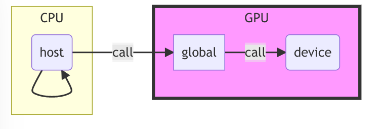
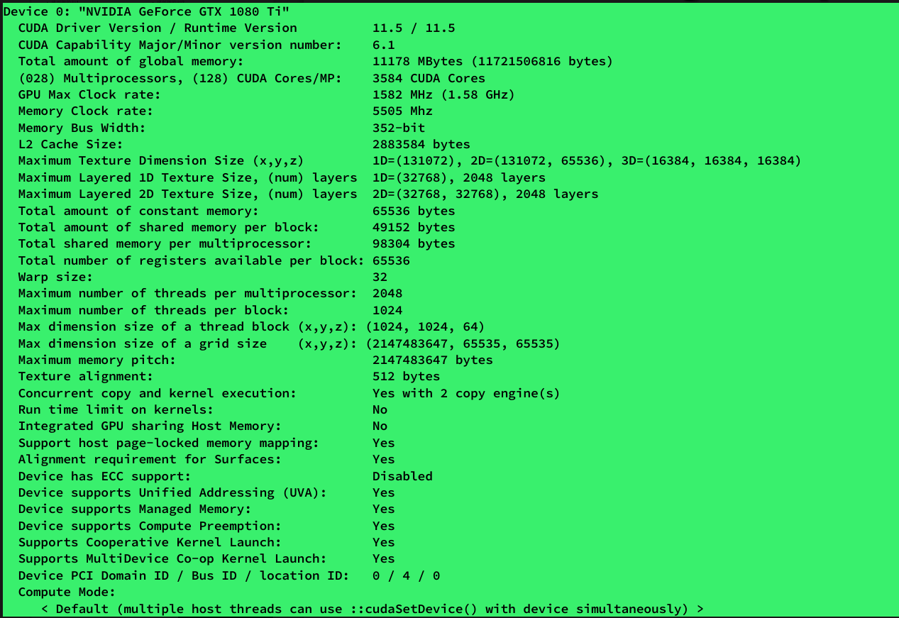
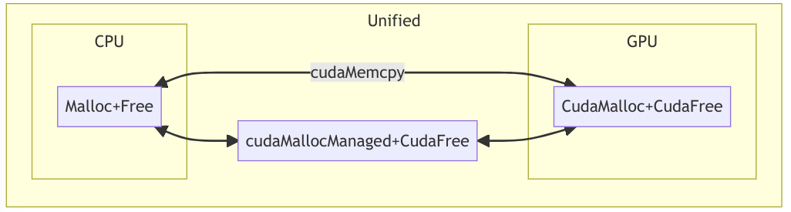
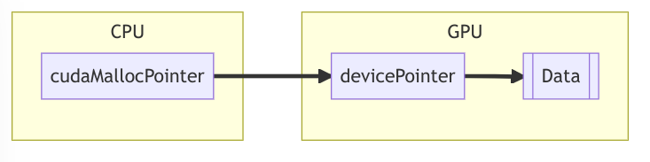
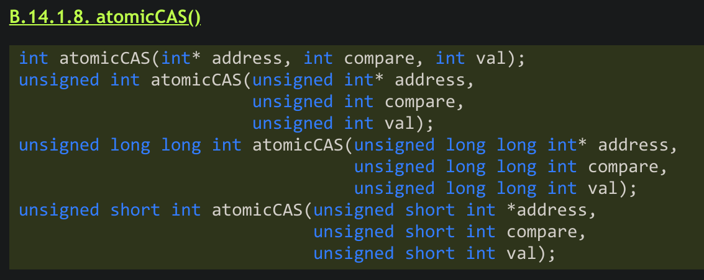

1 Requirements 在开始教程之前，简单说明一下下面步骤的需求和测试方法：
Git: 之后的范例使用 git 作为拉取
Cuda 11+：使用 11 以上的 cuda 版本确保之后的步骤可以正常使用
CMake：项目构建采用 cmake 确保多平台可以进行测试和实验
官方文档的学习曲线比较陡峭，下面整理一些例子帮助快速上手。
2 设备和主机 首先在这里，我个人想赞美一下 Nvidia 作为国际一流大厂的开源精神和优秀兼容性。现在的 Cuda 支持跨平台、语法兼容。这里语法兼容是指：cuda 是包含 C++17 语法的。直接写的 C++ 代码是可以在机器上直接运行的。
官方也有一个例子，说明 cuda 和 g++的编译内容可以混合使用：
在开始编程之前，需要分离我们的传统思维，程序可以不只在 CPU 上运行，还可以在 GPU 上面运行。因此，这里诞生两个概念：Host & Device。
1 2 3 4 5 6 7 8 9 10 11 12 13 14 15 16 17 18 19 __device__ void gpu_hello () { printf ("gpu hello!\n" ); __host__ void cpu_hello () { printf ("cpu hello!\n" ); __global__ void kernel () { int main () 1 , 2 >>>(); return 0 ;
其中我们可以看到三类不同的函数修饰：device_，__host__，和 __global\
在手册 4.2.1 函数类型限定词一节中进行了详细介绍。
2.1 设备定义
_device_ 是在设备上跑的，只可以 从设备上调用
_host_ 是在 CPU 上跑的，只可以 从主机上调用
_global_ 是在设备商跑的，只可以 从主机上调用

如果一个函数不加修饰，默认他是 _device_ 函数，正如上面的 main 一样。
如果一个函数需要同时在 CPU 和 GPU 上都能执行，那么可以同时加上 host 和 device 两个关键字。
2.2 函数调用 如果是 device 或者 host 函数，我们可以在恰当的位置直接调用。
2.3 函数限制 由于计算的行为限制，一些特殊的程序行为在 cuda 代码中是被严格禁止的，例如：
_host_ 和 _global_ 不支持递归
_global_ 返回值要求是 void
调用 GPU 的函数声明和定义不要分离，写在同一个文件里
更多限制见手册，不过上述两条基本包含了日常开发的需要。
这里额外补充一点，是因为特殊的需要说明一下。global__和__device 声明和调用他们的地方
2.4 Cuda Version & GPU Version https://en.wikipedia.org/wiki/CUDA
这个部分一般来说不太需要关心，但是上面给出一个链接用来说明各个版本的 GPU 的 compute capacity 的问题，每张 GPU 都有一个属于自己的版本号，版本号是向下兼容的，即高版本号的卡可以跑任何版本号低于自己卡上编译出来的程序。用尽可能高版本的卡的特性去编译程序有利于充分发挥程序的性能。
在 CMakeLists.txt 中设置：
1 set (CMAKE_CUDA_ARCHITECTURES 61 )
其中 61 是 1080 的版本号，在表格中有写出，也可以使用程序输出：
1 2 3 4 5 6 7 8 9 10 11 12 13 14 15 16 "%d\n" , __CUDA_ARCH__); 1 , 1 >>>(); return 0 ;
用来检测当前的版本是否正确，因为如果在 CMakeLists.txt 中不指明，那么机器会默认使用最低版本的驱动，也就是 520 版本的进行编译和后续优化。这显然不是我们希望的。
这里有一个我之前收藏的小文，介绍了更多的硬件细节：
https://zhuanlan.zhihu.com/p/394352476
2.5 关于设备上的输出问题 如果我们在 device 或者 global 的代码里调用了 printf 等输出函数，这个时候需要使用前面已经多次使用过的 cudaDeviceSynchronize() 才能生效。因为处于高性能的需求，我们的 CPU 代码执行和 GPU 代码执行是异步执行的。所以我们调用 GPU 代码之后，CPU 程序实际上是会继续执行的。如果要等上面的 GPU 代码执行完成，需要在此处同步等待一下。cudaDeviceSynchronize() 删除进行一个小小的测试）
3 Block 和 Thread 上面一节我们提到，如果我们调用 global 声明的函数的时候需要说明计算资源。这里我们解释一下 <<<arg1, arg2>>> 中两个参数的含义。
3.1 从例子开始 首先先从下面这个例子说明：
1 2 3 4 5 6 7 8 9 10 11 using namespace std ; __global__ void kernel () { printf ("Block %d of %d, Thread %d of %d\n" , blockIdx.x, gridDim.x, threadIdx.x, blockDim.x); int main () 4 , 3 >>>(); return 0 ;
输出结果：
1 2 3 4 5 6 7 8 9 10 11 12 Block 0 of 4, Thread 0 of 3
Cuda 有两个层级的并行，一个是 block 级别，一个是 thread 级别。
Arg1 = block 数目 = gridDim.x
Arg2 = 每个 block 中 thread 的数目 = blockDim.x
3.2 Block 和 Thread 的设计意义 为什么需要进行这两级的设计呢？
首先从命名上不难看出，GPU 的设计是为了进行 2D 和 3D 的网格类型计算。对应的应用就是：图形图像处理、粒子引擎模拟、网格算法计算。我们在计算是经常需要 “切分大数据，进行分发计算，最后再进行收集”。也就是常说的 Scatter-and-Gather, 或者 Fork-and-Merge。
现在的 GPU 架构中：
一个 GPU = 多个 Streaming Multiprocessor (SM) + cache 组成
一个 SM = Streaming Processor（SP）+ cache 组成
SM 用于处理 block
SP 用于处理 thread
很大一方面理由就是为了更加充分利用多级缓存的优势。
3.3 Flatten Mode 和 Dimension Mode 由于 Block 和 Thread 的两级设计导致我们的划分可能存在一定的困难，有一个简单粗暴的方法可以直接把他们压平。直接把上面那个例子进行压平改写：
1 2 3 4 5 6 7 8 9 10 11 using namespace std ; __global__ void kernel () { printf ("Thread %d of %d\n" , blockIdx.x * blockDim.x + threadIdx.x, blockDim.x * gridDim.x); int main () 4 , 3 >>>(); return 0 ;
输出结果：
1 2 3 4 5 6 7 8 9 10 11 12 Thread 0 of 12
由于 cuda 的适用范围，还有另外一种模式的其实在 HPC 应用中更加受到欢迎和广泛使用，一般称为 Dimension Mode。
首先展示一下结果：
1 2 3 4 5 6 7 8 9 10 11 12 13 14 __global__ void kernel () { printf ("Block (%d,%d,%d) of (%d,%d,%d), Thread (%d,%d,%d) of (%d,%d,%d)\n" , int main () 2 , 1 , 1 ), dim3(2 , 2 , 2 )>>>(); return 0 ;
首先看三维的例子：
1 2 3 4 5 6 7 8 9 10 11 12 13 14 15 16 Block (0,0,0) of (2,1,1), Thread (0,0,0) of (2,2,2)
再来给出一个二维的例子：
1 2 3 4 5 6 7 8 9 10 11 12 13 14 __global__ void kernel () { printf ("Block (%d,%d,%d) of (%d,%d,%d), Thread (%d,%d,%d) of (%d,%d,%d)\n" , int main () 2 , 3 , 1 ), dim3(2 , 1 , 1 )>>>(); return 0 ;
结果最后一个维度都是 0, 我们使用结果的时候不使用 z 维度即可
1 2 3 4 5 6 7 8 9 10 11 12 Block (1,2,0) of (2,3,1), Thread (0,0,0) of (2,1,1)
3.4 如何设置计算资源？ 上面说了我们 GPU 并行的时候有两个层级，第一个是 Block 级别，第二个是 Thread 级别。为此我们需要设置两个级别的数目。
首先我们先看我们最多可以用多少资源。使用 cuda samples 中的 deviceQuery （Make 直接编译整个 cuda-samples 项目可以找到）

此程序会列举机器上的所有设备，列举设备之后可以展示出机器的所有详细信息。这里我们看到了关键的几行信息：
Maximum number of threads per block
前者比较好理解，我们看看后一个 dimension 的含义，首先先列举一下官方论坛 的说辞：
There are multiple limits. All must be satisfied.
The maximum number of threads in the block is limited to 1024. This is the product of whatever your threadblock dimensions are (x_y_z). For example (32,32,1) creates a block of 1024 threads. (33,32,1) is not legal, since 33*32*1 > 1024.
The maximum x-dimension is 1024. (1024, 1, 1) is legal. (1025, 1, 1) is not legal.
The maximum y-dimension is 1024. (1, 1024, 1) is legal. (1, 1025, 1) is not legal.
The maximum z-dimension is 64. (1, 1, 64) is legal. (2, 2, 64) is also legal. (1, 1, 65) is not legal.
配合论坛中的内容，这里也很好理解了。
结合了上面的例子，cuda 的变成已经变得相对直观，用来优化一些简单的循环已经可以实现了。这里可以概括一下：
cuda Block 级别相当于 C++ 线程，数目可以设置比较大，调度依靠 GPU ，方式类似于 CPU 调度 threads
cuda Thread 级别相当于 SIMD，有数目上限，受限于 cuda core 的数目和一些维度参数
4 变量行为 简单的例子说明完成，下面开始介绍每一个具体的函数内部，我们程序的行为。
4.1 显存和内存 在使用 GPU 编程（也有可能在玩游戏）的时候，有一个词时常出现：显存。
首先一图概览接下来的内容：

简述一下：
显存和内存独立管理各自的 DRAM
互相调用树枝需要使用 cudaMemcpy
Unified 统一管理模式可以解决管理问题，但是代价是需要额外的时间开销
下面配合具体的例子说明。
4.2 显存内存不能互相调用 4.2.1 设备调用内存失败 我们复习一下在内存中如何申请空间，在 C/C++ 中，我们一般会使用一对函数： malloc & free 用于一块内存的申请与释放。
下面给出一个例子：
1 2 3 4 5 6 7 8 9 10 11 12 13 14 15 16 17 18 19 20 21 22 23 __global__ void kernel (int *arr) { 0 ] = 0 ; int index = 1 ; while (arr[index] != 0 ) { 0 ] += arr[index]; int main () int *a; int *)malloc (sizeof (int ) * 12 ); int index = 1 ; for (index = 1 ; index <= 10 ; ++index) { 1 , 1 >>>(a); printf ("%d" , a[0 ]); free (a);return 0 ;
4.2.2 主机调用显存失败 这里首先说明一下 cuda 是如何展示显存的。
这里需要说明的是 cudaMalloc 的用法和 malloc 差异极大：
1 cudaError_t cudaMalloc (void ** ptr, size_t size) ;
配合下图理解：

我们申请的是一个 “指向 GPU 数据指针的指针”。
我们申请到的空间是在一个二级指针上存储，下面举一个例子：
1 2 3 4 5 6 7 8 9 10 11 12 13 14 15 16 17 18 19 20 21 22 23 __global__ void kernel (int *arr) { 0 ] = 0 ; int index = 1 ; while (arr[index] != 0 ) { 0 ] += arr[index]; int main () int *a; sizeof (int ) * 12 ); int index = 1 ; for (index = 1 ; index <= 10 ; ++index) { 1 , 1 >>>(a); printf ("%d" , a[0 ]); return 0 ;
4.2.3 cuda Error Handling 上面两个失败的例子再次说明了内存和显存不能“直接”混合使用。（下面会说一种支持混合使用的技术）
为了方便调试，cuda 提供了一系列的纠错调试机制，在前面的程序中，用到的：cudaMalloc，cudaFree，cudaDeviceSynchronize 都有返回类型便于我们调试，返回类型是一个 cudaError_t 的没枚举类型，可以被 printf 直接输出。
但是输出了我们是不能理解函数的具体含义的，也不方便我们进行 debug。这里 cuda samples 里面提供了一个非常好的例子，我们可以直接引用 helper_cuda.h 头文件解决问题。
1 2 3 4 5 6 7 8 9 10 cmake_minimum_required (VERSION 3.10 ) set (CMAKE_CXX_STANDARD 17 ) set (CMAKE_BUILD_TYPE Release) set (CMAKE_CUDA_ARCHITECTURES 61 ) project (devices LANGUAGES CXX CUDA) add_executable (hello hello.cu) target_include_directories (hello PUBLIC /usr/local/cuda/samples/common/inc)
1 2 3 4 5 6 7 8 9 10 11 12 13 14 15 16 17 18 19 20 21 22 23 __global__ void kernel (int *arr) { 0 ] = 0 ; int index = 1 ; while (arr[index] != 0 ) { 0 ] += arr[index]; int main () int *a; int *)malloc (sizeof (int ) * 12 ); int index = 1 ; for (index = 1 ; index <= 10 ; ++index) { 1 , 1 >>>(a); printf ("%d\n" , a[0 ]); free (a); return 0 ;
这样就完成了我们的 debug 工作，此时输出结果为：
1 2 0
这里的 IllegalAddress 就说明了地址无法正常使用。
4.2.5 cudaMemcpy 那么正确的做法是什么呢？我们如果需要通信两个地方的内存，需要借助 cudaMemcpy 函数。
下面是正确的改正方法：
1 2 3 4 5 6 7 8 9 10 11 12 13 14 15 16 17 18 19 20 21 22 23 24 25 26 27 28 29 30 __global__ void kernel (int *arr) { 0 ] = 0 ; int index = 1 ; while (arr[index] != 0 ) { 0 ] += arr[index]; int main () int *a; int *)malloc (sizeof (int ) * 12 ); int index = 1 ; for (index = 1 ; index <= 10 ; ++index) { int *cuda_a; sizeof (int ) * 12 ); sizeof (int ) * 12 , cudaMemcpyHostToDevice); 1 , 1 >>>(cuda_a); sizeof (int ) * 12 , cudaMemcpyDeviceToHost); printf ("%d\n" , a[0 ]); free (a); return 0 ;
结果是：
这个时候我们可以总结一般的 cuda 变成行为方法：
Generate Data/Read Data
Copy: Host->Device
Calculate
Copy: Device->Host
Print out
这里说明一下：
4.2.4 Unified Memory 首先先给出官方的一份博客：Unified Memory
我们把上面的例子直接改写：
1 2 3 4 5 6 7 8 9 10 11 12 13 14 15 16 17 18 19 20 21 22 23 24 25 __global__ void kernel (int *arr) { 0 ] = 0 ; int index = 1 ; while (arr[index] != 0 ) { 0 ] += arr[index]; int main () int *a; sizeof (int ) * 12 )); int index = 1 ; for (index = 1 ; index <= 10 ; ++index) { 1 , 1 >>>(a); printf ("%d\n" , a[0 ]); return 0 ;
Unified Memory 申请的空间在 Host 和 Device 上都直接可以正常使用。节省代码，但是代价也是随之而来的，我们需要使用一定的性能作为代价。这个有时是劣势，但有些时候这种方法反而可以达到优化的效果。
4.3 变量传输和计算 这里我们简单介绍一下一般的循环模式。
4.3.1 grid-stride loop 在 cuda 中，并行的模式有一点特殊，我们称为 grid-stride loop。
简单解释一下：
如果我们希望对一个循环进行并行，直观的想法就是分配足够多的线程执行他。如果循环次数少于 1024, 我们完全可以使用一个 block, 里面分配 循环次数对应的线程数 从而达到目的。但是这里不是我们希望看到的结果，因为我们不能保证我们的循环次数一定小于 1024。我们用下面的例子说明我们是如何用 cuda 执行循环的：
1 2 3 4 5 6 7 8 9 10 11 12 13 14 15 16 17 18 19 20 21 22 __global__ void kernel (int *arr, int n) { for (int i = threadIdx.x; i < n; i += blockDim.x) { int main () int n = 114 ; int *arr; sizeof (int ))); 1 , 4 >>>(arr, n); for (int i = 0 ; i < n; i++) { printf ("arr[%d]: %d\n" , i, arr[i]); return 0 ;
由于 cuda 的大显存设计，我们大可以将一个数组很大一块连续块装入，而且 cuda 的计算机制保证了 blockDim 不会太大（1024）。所以这里尽管是跳步加，也不会过多的伤害到空间局部性。在不同的设备上，我们可以通过直接调整 blockDim 进行性能的测试，从而调优。Debug 的时候也可以直接把 gridDim 改成 1 从而进行便捷的调试。此外，这种写法的逻辑非常好整理，也方便进行记忆。为此这种方法被人们广泛使用。
如果我们需要启用多个 Block, 那么我们面临一个新的问题，如果循环次数不是 blockDim 的整数倍我们如何处理？
1 2 3 4 5 6 7 8 9 10 int loopCount = .....;int block_dim = ...;int grid_dim = (loopCount - 1 ) / block_dim + 1 ;
好文推荐（示意图很好）： http://alexminnaar.com/2019/08/02/grid-stride-loops.html
官方博客中还推荐了另外一种非常灵活的写法：https://developer.nvidia.com/blog/cuda-pro-tip-write-flexible-kernels-grid-stride-loops/
1 2 3 4 5 __global__ void saxpy (int n, float a, float *x, float *y) {for (int i = blockIdx.x * blockDim.x + threadIdx.x; i < n; i += blockDim.x * gridDim.x) {
相当与我们的 Flatten Mode 的编程方法，确保我们不会落下数据没有循环。
虽说大部分 C++17 的代码 cuda 可以跑起来，但是 STL 容器 cuda 并没有很好的适配和实现，如果需要用容器，我们需要自己定义 allocator。这里推荐一个 gist： https://gist.github.com/CommitThis/1666517de32893e5dc4c441269f1029a
其中定义了：
1 2 3 4 5 6 7 8 9 10 11 12 13 14 15 16 17 18 19 20 21 22 23 24 25 26 27 28 29 30 31 template <typename T>class unified_alloc { public :using value_type = T;using pointer = value_type*;using size_type = std ::size_t ;noexcept = default ;template <typename U>const &) noexcept {}auto error = cudaMallocManaged((void **)&tmp, n * sizeof (T));if (error != cudaSuccess) {throw std ::runtime_error { cudaGetErrorString(error) };return tmp;if (p) {auto error = cudaFree(p);if (error != cudaSuccess) {throw std ::runtime_error { cudaGetErrorString(error) };
如果此时我们需要定义 vector, 只需要：
1 std ::vector <int , unified_alloc<int >> arr(length);
即可。
这里vector即使定义成功了，我们使用的时候还是会有一些问题，因为__global__函数的参数限制问题，我们只能传递 arr.data() 从而获取类似数组地址的方法传递参数。综上所属，楞写 STL 不是一个好办法，下面的 thrust 中会介绍一些靠谱的办法。
4.3.2 算子传输 在 cuda 编程的时候，经常遇到下面这个问题：
对于很多类似的函数，我们只需要更换其中的一个小函数即可，例如计算
$$
很多时候只需要换一个算子，我们不需要重复构造很多个函数（减少函数数量其实是有一定好处的，对于模式类似的函数，如果适当利用 lambda 算子，我们可以减少编译器的编译负担）
这种时候我们可以采用两种方法。
第一种就是 lambda 算子：
1 2 3 4 5 6 7 8 9 10 11 12 13 14 15 16 17 18 19 20 21 22 23 24 25 26 27 28 29 30 31 32 33 34 35 36 template <class Func >__global__ void kernel (int n, Func func) { for (int i = blockDim.x * blockIdx.x + threadIdx.x; int main () int n = 10 ; int *arr; sizeof (int )); int block_dim = 128 ; int grid_dim = (n - 1 ) / block_dim + 1 ; int i) { int i) { printf ("%d, %f\n" , i, sinf(arr[i])); return 0 ;
注意 lambda 算子也是要在 GPU 上执行的，所以需要加上 _device_ 进行修饰。
第二种方法就是使用类似于函数指针的方式。不过 cuda 中函数指针的定义非常严格：
1 2 3 4 5 6 7 8 9 10 11 12 13 14 15 16 17 18 19 20 21 22 23 24 25 26 27 28 29 30 31 32 33 34 35 36 37 38 39 40 41 42 43 44 template <class Func >__global__ void kernel (int *arr, int n, Func func) { for (int i = blockDim.x * blockIdx.x + threadIdx.x; struct funcop1 {__device__ void operator () (int *arr, int i) { struct funcop2 {__device__ void operator () (int *arr, int i) { printf ("%d %f\n" , arr[i], sinf(arr[i])); int main () int n = 10 ; int *arr; sizeof (int )); int block_dim = 128 ; int grid_dim = (n - 1 ) / block_dim + 1 ; return 0 ;
需要注意的是：
由于地址类型在传递时，CPU 和 GPU 不一致，所以需要用结构体封装一层
结构体中的函数是在 GPU 上计算，需要用 device 修饰
结构体中函数需要用 operator () 修饰
到这里，基础部分已经基本结束。
4.4 高级计算行为 4.4.1 thrust 之前我们提及过，在 cuda 中无法使用 C++ STL 进行编程，为此我们需要使用 Nviida 提供的黑科技： thrust。
首先简单介绍一下，thrust 库被称为： Template library for CUDA，自从 cuda 4.0 就开始有了（甚至比 unified Memory 还早是我没想到的）。主要目的是对标 C++ STL。简化 HPC 编程。
4.4.1.1 vector 对标 C++ STL 中 vector 容器属实是一个使用主力了，在 thrust 中我们也有对应的实现，分别为：universal_vector，host_vector，device_vector。他们的用途根据名字应该已经可以猜到了。使用 thrust 之后，我们可以直接使用 = 进行数值拷贝。Cuda 中已经完成了这一部分的重载工作。
下面列举一个例子：
1 2 3 4 5 6 7 8 9 10 11 12 13 14 15 16 17 18 19 20 21 22 23 24 25 26 27 28 29 30 31 32 33 34 35 36 37 38 39 template <class Func >__global__ void kernel (int n, Func func) { for (int i = blockDim.x * blockIdx.x + threadIdx.x; int main () int n = 65536 ; int block_dim = 128 ; int grid_dim = (n - 1 ) / block_dim; thrust::host_vector<float > x_host (n) ; thrust::host_vector<float > y_host (n) ; return std ::rand() / 3.0 ;}); return std ::rand() / 11.0 ;}); printf ("%f + %f = \n" , x_host[0 ], y_host[0 ]); thrust::device_vector<float > x_dev (n) ; thrust::device_vector<float > y_dev (n) ; int index){ printf ("%f\n" , x_host[0 ]); return 0 ;
输出结果：
1 2 601429824.000000 + 151421216.000000 =
本程序成功的展示了 thrust_vector 之间互相 copy 的行为，这里辅助使用了一下 thrust :: generate 用于生成随机序列。（这就是前一节花篇幅辅助介绍算子传递的原因，lambda 算子在 thrust 中会有广泛的应用，尽管这是 C++20 才应该有的特性，但是很多编译器早早的提供了支持「赞美 LLVM」。）
4.4.1.2 other thrusts Thrust 中还有很多和 STL 对标的内容，例如 For_each、sort、count_if 这些都是非常常用的 thrust 函数，使用方法和 generate 几乎一致，没有过多差别。
https://thrust.github.io/doc/namespacethrust.html
这里个人推荐在上面的网页中查找 thrust 的 API。Doxygen 提供了详细的文档管理。我们可以查到具体的使用方法和相对应的例子。
4.4.2 atomic 说道这个问题，很容易会和生产-消费的问题联系到一起。这里先列举一个翻车的例子：
(下面这个例子中顺便引入了一个 trick, 在 cuda 中我们是可以使用全局变量的，但是和我们管理内存的方式是一样的，一个全局变量也是有“位置”的，我们在 GPU 和 CPU 上的全局变量需要使用 cudaMemcpyFromSymbol 进行拷贝)
1 2 3 4 5 6 7 8 9 10 11 12 13 14 15 16 17 18 19 20 21 22 23 24 25 26 27 28 29 30 31 32 33 34 35 36 37 38 39 40 41 42 43 44 float sum = 0 ;template <class Func >__global__ void kernel (int n, Func func) {for (int i = blockDim.x * blockIdx.x + threadIdx.x;int main () int n = 65536 ;int *arr;float result = 0 ;sizeof (int ));int block_dim = 128 ;int grid_dim = (n - 1 ) / block_dim;int i) {int i) {sizeof (float ), 0 , cudaMemcpyDeviceToHost);printf ("%f\n" , result);0 ;for (int index = 0 ; index < n; ++index) {printf ("%f" , result);return 0 ;
上面的例子非常好理解，是我们之前一个 lambda 例子的微微改进，我们之所以说明这个例子是因为这个程序行为非常“鬼畜”。每次执行结果都可能不同。那么问题在哪里呢？
在于
操作实际上不是原子的。我们的不同的 i 会抢占对于 sum 的使用。
修正方法也很简单：
1 2 3 4 5 6 7 8 9 10 11 12 13 14 15 16 17 18 19 20 21 22 23 24 25 26 27 28 29 30 31 32 33 34 35 36 37 38 39 40 41 42 43 44 float sum = 0 ; template <class Func >__global__ void kernel (int n, Func func) { for (int i = blockDim.x * blockIdx.x + threadIdx.x; int main () int n = 65536 ; int *arr; float result = 0 ; sizeof (int )); int block_dim = 128 ; int grid_dim = (n - 1 ) / block_dim; int i) { int i) { sizeof (float ), 0 , cudaMemcpyDeviceToHost); printf ("%f\n" , result); 0 ; for (int index = 0 ; index < n; ++index) { printf ("%f\n" , result); return 0 ;
即改为：
1 atomicAdd(&sum, sinf(arr[i]));
此时就只有一点点由于加法顺序不同导致的精度误差了。这一些误差是可以被接受的。
那么我们继续分析一下这个问题，在 cuda 内部我们是如何实现原子的。这个问题在“编译原理”课程中可能有过类似的解答。
换而言之，类似 atomicAdd, 我们又如下的步骤：
Value_prev = Target
Target += …
Return Value_prev
如果此时 Value_prev 和现在的状态一致的，就可以进行更新。
Cuda 中还有这些原子函数：
atomicAdd (dst, src)
他们都有返回值，返回违背更改前的数值。
更加一般的，我们可以自己定义一个属于自己的原子操作：
1 2 3 4 5 6 7 8 9 10 11 12 13 14 15 16 17 18 19 20 21 22 23 24 25 26 27 28 29 30 31 32 33 34 35 36 37 38 39 40 41 42 43 44 45 46 47 48 49 50 51 52 53 54 55 float sum = 0 ; __device__ float my_atom_add (float *dst, float src) { int old = __float_as_int(*dst); int expect; do { int *)dst, expect, while (expect != old); return old; template <class Func >__global__ void kernel (int n, Func func) { for (int i = blockDim.x * blockIdx.x + threadIdx.x; int main () int n = 65536 ; int *arr; float result = 0 ; sizeof (int )); int block_dim = 128 ; int grid_dim = (n - 1 ) / block_dim; int i) { int i) { sizeof (float ), 0 , cudaMemcpyDeviceToHost); printf ("%f\n" , result); 0 ; for (int index = 0 ; index < n; ++index) { printf ("%f\n" , result); return 0 ;
我们使用 atomoicCAS 按照类似的逻辑步骤：
记录维护原始值
试图 CAS 更改
成功改动之后可以停下
这里使用了一些技巧，结合下面的官网借口解释：
https://docs.nvidia.com/cuda/cuda-c-programming-guide/index.html#atomiccas

AtomicCAS 是一个只支持整数的借口，如果需要浮点支持，需要进行 as float 进行转换。
这里不难看出另一个问题，如果我们的原子操作被严格执行，那么原子操作会成为一个严重的瓶颈。相当于所有的数据都要过一遍着一个原子操作。但是实际上GPU跑起来还是非常快的，这是因为GPU根据blockDim和gridDim进行了操作，部分串行。以求和为例，我们会将数据分成几个大块，分别计算部分和，最后再进行规约。利用这种方法保证了此处不会成为瓶颈。